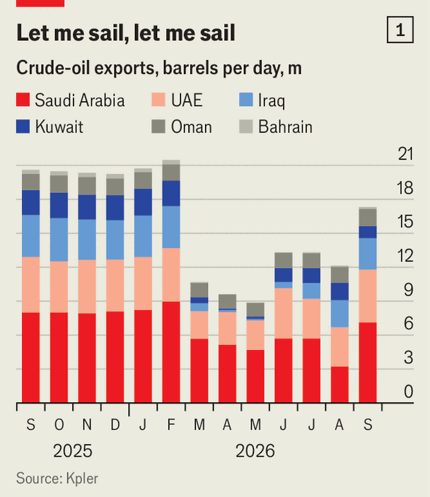
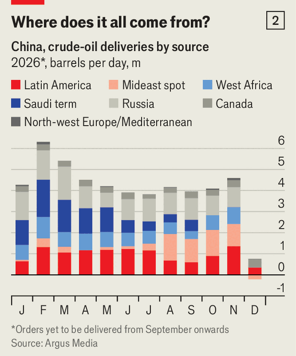
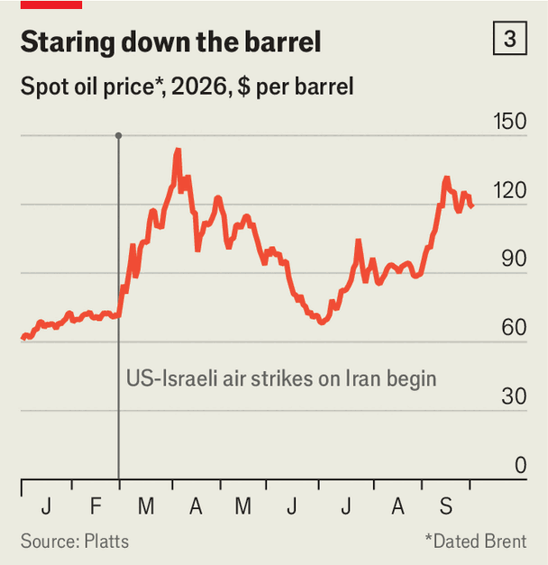

Has Iran lost its grip on Gulf oil exports?
Exports through the Strait of Hormuz and beyond are soaring but prices remain stubbornly high
Oct 1st 2026
ON SEPTEMBER 26TH Donald Trump rejected an Iranian ceasefire proposal that would have reopened the Strait of Hormuz within seven days. Iran wants a deal because it is “losing so badly,” said the president. Mr Trump and many of his advisers reckon that America has more to gain by waiting.

The volume of oil coming out of the Gulf would seem to prove him right. Kpler, a shiptracker, estimates that the region’s Arab states have shipped, on average, 17m barrels per day (bpd) of crude oil and refined products so far in September, if flows through Hormuz and those bypassing it via pipelines are included. That is the highest volume since February and close to the pre-war daily total of 21m (see chart 1). Iran, by contrast, is exporting just 200,000 bpd, less than a tenth of what it shipped before the conflict began. From Washington, 7,000 miles away, Iran’s chokehold on Gulf oil appears to be loosening.
But is that right? Brent crude, the global benchmark, remains stuck at around $100 a barrel—around 40% higher than in June, when America and Iran sealed a (temporary) deal, even though export volumes were a quarter lower then. The problem is not eye-watering freight costs: rates for chartering tankers are at record levels, but Brent futures are quoted “free-on-board”, reflecting the price of crude at loading, not delivery. Instead, three explanations stand out: crude supply still lags behind demand; the prospect of an American diesel-export ban is distorting markets; and fears are growing that Iran may attack ships or energy infrastructure again.
Take the supply-demand imbalance first. Flows through Hormuz have swelled because Saudi Arabia is pushing many more barrels through the conduit than it was earlier in the war. On September 28th Saudi Aramco invited Chinese refiners to bid for cargo loading next month, having already sold more than 90m barrels in two rounds in the previous two weeks. Most Saudi oil now moves under American escort, on state-owned tankers that shuttle through the strait, before being transferred to other vessels in the Gulf of Oman. The United Arab Emirates uses similar tactics.
State-owned ships resist pressure better than private ones, so flows have not stopped even as Iran is sounding more bellicose again. But Saudi officials themselves admit the ship-to-ship scheme is costly, clunky and unsustainable. And Gulf supply remains 4m bpd short of pre-war levels. The world feared it could face a similar shortfall after Russia invaded Ukraine and Brent peaked at $129.

At the same time, global demand for crude has picked up. China, having slashed its crude purchases by nearly 40% over the summer, is thirsty for oil again (see chart 2). Domestic stocks of jet fuel, diesel and petrol have declined so fast that wholesale fuel prices now exceed retail ones (which are capped by the government). So refiners are working harder to satisfy the home market. Until China appeared to reimpose export curbs on October 1st, they had also been importing more only to export it, since a global fuel crunch promised fat profits abroad. Import-for-export purchases were probably higher in recent weeks in the expectation of curbs.
China is also having to replace the oil it used to buy from Iran. That is forcing it to buy more crude on the open market, pushing up official prices. The cost of the kind of oil that is most similar to that produced by Iran has risen even more than Brent: Dubai futures are trading at $116 a barrel. But China is also competing with European buyers for North Sea-like grades, lifting Brent in the process, too.

The upshot is that global crude supply still falls short of demand. Dated Brent, which tracks oil loading in the next few weeks, hovers at around $120 a barrel (see chart 3). It is normally within a few dollars of Brent futures; the unusually wide gap points to a crunch in spot markets.
Brent is also being lifted by shortages in another market: diesel. Limited Gulf flows and an export ban in Russia have pushed wholesale diesel prices to nearly $200 in major markets. American pump prices remain close to $6.50 a gallon, a record, angering truckers and farmers weeks before the midterms. Mr Trump says he favours restricting exports of the fuel, large volumes of which have gone to Europe since the war began. That would cut demand for American crude, since refiners there would process less of it, while lifting demand for other grades as European refiners sought to produce more diesel. That prospect has already pushed Brent $12 above West Texas Intermediate, the American benchmark.
That leaves the third risk: Iran could lash out again. Its hardline rulers must resent seeing Hormuz traffic escape their control. Three attacks on tankers were reported on September 30th but Iran has not disabled one since September 23rd. But that could change. Unverified reports suggest Iran has laid new mines in the strait, or is preparing to. Windward, a shipping-intelligence firm, detected 75 high-speed craft, capable of deploying drifting ordnance, swarming off the Omani coast on September 26th. Iran retains the capacity to strike Gulf oilfields and energy facilities. Saudi Arabia’s East-West pipeline, hit in early September and partially repaired, remains vulnerable. So are Saudi ports. And the Houthis, Iran-backed rebels in Yemen, could further limit traffic through Bab al-Mandab, a vital Red Sea shipping route.
Greater exports do not mean Hormuz has become safer to traverse; they suggest only that the oil industry has adapted to operating under sustained risk. That risk may yet materialise and throttle flows again. Past Hormuz performance is no guarantee of future results—especially if Iran feels cornered. ■
Correction (October 1st): An earlier version of this piece said that Iran offered to open Hormuz for seven days. It offered to do so within seven days. Sorry.